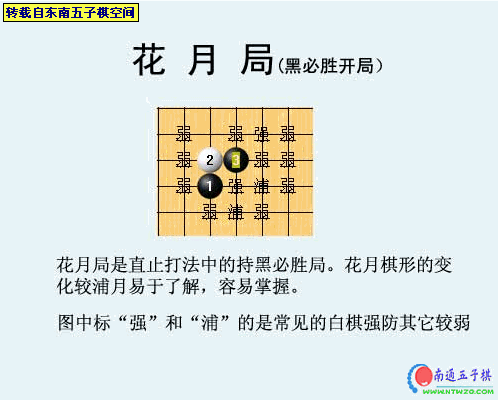
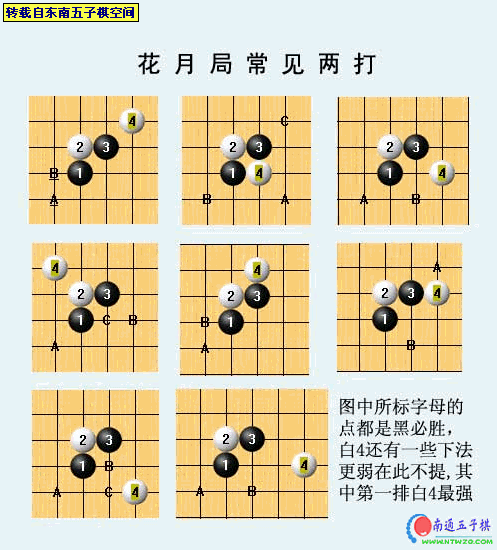
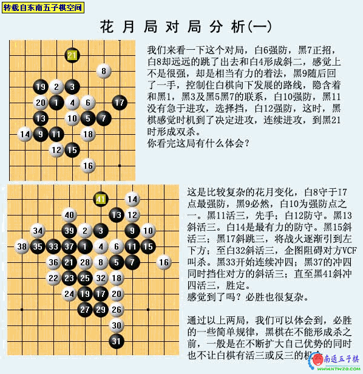
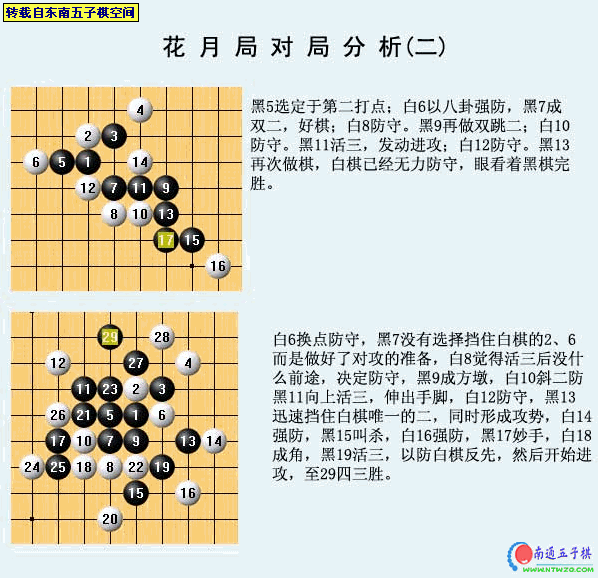
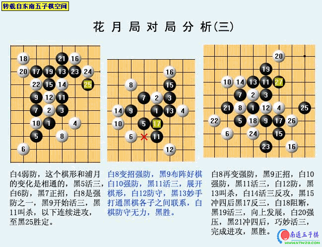
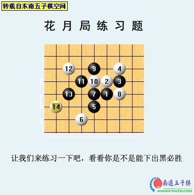

花月开局[东南五子棋讲座]
#1 花月开局[东南五子棋讲座] 作者：有志青年 发表时间：2006-11-30 22:10:41





#2 Re:花月开局[东南五子棋讲座] 作者：pollow 发表时间：2007-4-8 15:06:31
都看不太懂...又没有简单点的讲解啊.第三页看的就有点晕了#3 Re:花月开局[东南五子棋讲座] 作者：Goebby 发表时间：2007-4-29 1:40:42

#4 Re:花月开局[东南五子棋讲座] 作者：Goebby 发表时间：2007-4-29 1:41:24
楼主，这样对不？
#5 Re:花月开局[东南五子棋讲座] 作者：对啊 发表时间：2009-11-8 13:33:21
最后习题怎么解啊
#6 Re:花月开局[东南五子棋讲座] 作者：最爱绿茶 发表时间：2009-11-9 11:16:01
看看，学习学习#7 Re:花月开局[东南五子棋讲座] 作者：初级棋士 发表时间：2009-11-12 21:03:47
非常好！学习啦！#8 Re:花月开局[东南五子棋讲座] 作者：像傻瓜一个的笨蛋 发表时间：2009-11-15 21:29:31
请问下哦！对于花月局对局分析一的第一个图！！黑13为何不直接下到白14去？这样不是直接必胜吗？？#9 Re:花月开局[东南五子棋讲座] 作者：小兮 发表时间：2009-11-16 18:51:16
这是禁手规则 不能活33
［ 有志青年 于 2009-11-17 8:52:26 时奖励此帖[金币加 20 威望加1］
#10 Re:花月开局[东南五子棋讲座] 作者：不再捣乱 发表时间：2009-11-17 15:56:25
学习了 补充44也是禁#11 Re:花月开局[东南五子棋讲座] 作者：像傻瓜一个的笨蛋 发表时间：2009-11-17 18:29:02
谢了，我忘记禁手了，一直都玩无禁手的！！#12 Re:花月开局[东南五子棋讲座] 作者：杏花村 发表时间：2009-11-21 21:40:41
21与17，21与13都是相隔远远的，但分别通过3和通过19联系着，隐藏着的联系有相当大的杀伤力。#13 Re:花月开局[东南五子棋讲座] 作者：杏花村 发表时间：2009-11-21 22:08:11
学习，开拓思路。#14 Re:花月开局[东南五子棋讲座] 作者：我就是爱五子棋啊 发表时间：2011-2-6 22:05:01
=======上图对应的爱五子棋谱代码如下，以便你拆解：========
h8h9i9i10g7f6g8i8g10g9f9e10e8d7f8d8f11f10h11i12g11i11j8h10h6i5i7k9j7h7j10
======================================================
老师留下的作业
不知这个解法如何
#15 Re:花月开局[东南五子棋讲座] 作者：梧桐风 发表时间：2011-2-6 23:20:46
楼上的解法不行，28可以有反，就算挡上面，白棋也可以拉长连。做杀可以避免拉长连
#16 Re:花月开局[东南五子棋讲座] 作者：梧桐风 发表时间：2011-2-6 23:32:54
=======上图对应的爱五子棋谱代码如下，以便你拆解：========
h8h9i9i10g7f6g8i8g10g9f9e10e8d7f8d8f11f10h6i5h11i12g11i11f12h10d10e9e11
======================================================
#17 Re:花月开局[东南五子棋讲座] 作者：妖蛾子 发表时间：2011-4-11 14:17:02
这样的解答对吗？
=======上图对应的爱五子棋谱代码如下，以便你拆解：========
h8h9i9i10g7f6g8i8g10g9f9e10e8d7f8d8f11f10h11i12g11e11j8h10j11i11j10
======================================================
#18 Re:花月开局[东南五子棋讲座] 作者：妖蛾子 发表时间：2011-4-11 14:18:29
还有另一边的．
=======上图对应的爱五子棋谱代码如下，以便你拆解：========
h8h9i9i10g7f6g8i8g10g9f9e10e8d7f8d8f11f10h11i12g11i11f12h10d10e9e11
======================================================
#19 Re:Re:花月开局[东南五子棋讲座] 作者：秋天回来 发表时间：2011-4-11 19:25:08
18和25换怎么办